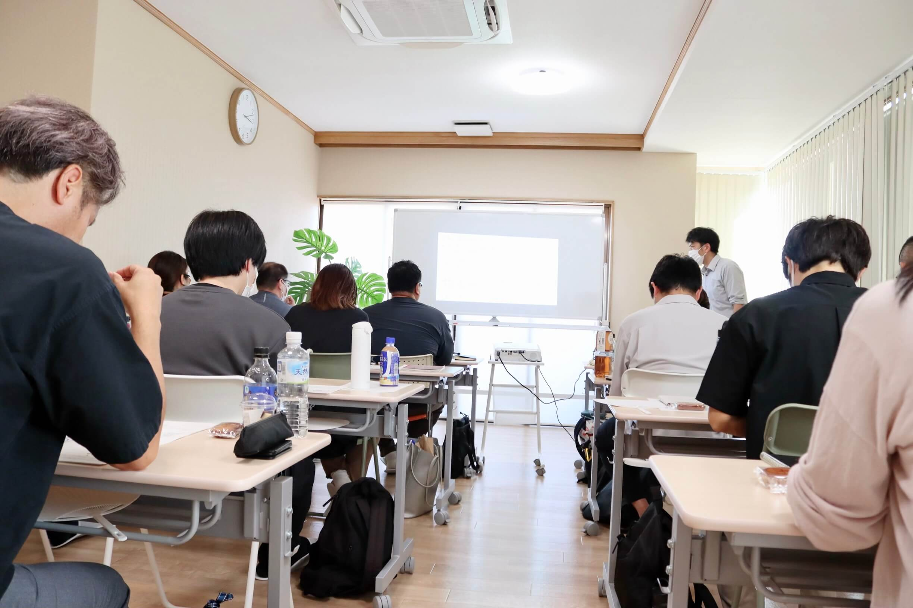
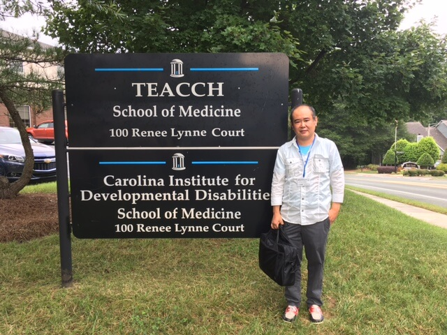

現役支援者が伝える、
現場で活きる2日間
東京都強度行動障害支援者養成研修〈基礎／実践〉
会場：拝島駅 徒歩2分
【次回開催日程】 ※対面（会場）開催のみとなります
基礎研修：2026年8月6日(木)〜7日(金)
実践研修：2026年11月5日(木)〜6日(金)
開催時間：両日とも 9:30〜17:30（昼休憩1時間を含む）
受講料 21,500円（税込・テキスト代込）
公的な要件を満たすための「東京都知事指定」研修です
本研修は、厚生労働省の定めにより東京都知事の指定を受けて実施する公式な養成研修です。
研修を修了することで交付される修了証は、事業所における加算や人員配置要件等でご活用いただけます。
※算定可否はサービス種別・自治体運用・対象者要件等により異なります。必ず各自治体の指定権者にご確認ください。
こんなお悩みありませんか？
- スタッフの対応がバラつき、利用者の行動が悪化してしまう
- 問題行動への対応に追われ、現場が疲弊している
- チーム支援のための共通言語やアセスメント基準がない
- 事業所の体制整備（加算・人員配置）の要件を満たしたい
本研修で得られる2つのメリット
支援面のメリット
- 行動を「状態」として客観的に理解できる
- 環境を本人に合わせる視点と具体策の習得
- 支援の属人化を防ぎ、チーム支援を可能に
- 現場のストレス軽減と虐待リスクの低減
報酬面・体制面のメリット
研修修了者は以下の要件等に活用できます。
- 重度障害者支援加算の要件
- 強度行動障害児支援加算等の要件
- 専門的な支援体制を備えた職員配置の整備
※算定可否はサービス種別・自治体運用・対象者要件等により異なりますので、事前に指定権者へご確認ください。
UT福祉カレッジが選ばれる理由
東京都知事指定の公的研修
確かなカリキュラムに基づく公式な研修です。修了証は公的な要件として利用可能です。
少人数・対面でしっかり学べる
各回15名（最大16名）の少人数制。講師への質問もしやすく、対面ならではの深い演習が可能です。
拝島駅 徒歩2分の好アクセス
JR青梅線・西武拝島線の拝島駅からすぐ。明るい会場と屋上フリースペースで快適に受講できます。
現役支援者が現場目線で指導
TEACCH研修歴をもつ専門家が講師。机上の空論ではない、現場事例を交えた実践的な指導を行います。
研修風景
※実際の研修や会場の様子をご紹介します。

基礎研修・実践研修について
障害福祉サービス等に従事している方、または従事予定の方が対象です。
期間： 2日間（計12時間）
内容： 講義 6.5時間 ＋ 演習 5.5時間
強度行動障害の基本的理解や、制度・支援技術の基礎知識を学びます。
より高度なチーム支援やアセスメントを学ぶためのステップアップ研修です。
期間： 2日間（計12時間）
内容： 講義 3.5時間 ＋ 演習 8.5時間
特性理解とアセスメント、環境調整、危機対応などの演習を重点的に行います。
カリキュラム詳細
基礎研修（計12時間）
| 講義 (6.5h) | 基本的理解 (1.5h) ／ 制度及び支援技術の基礎的な知識 (5h) |
|---|---|
| 演習 (5.5h) | 情報収集と記録の共有 (1h) ／ 固有のコミュニケーション理解 (3h) ／ 背景にある特性の理解 (1.5h) |
実践研修（計12時間）
| 講義 (3.5h) | チーム支援 (3h) ／ 生活の組み立て (0.5h) |
|---|---|
| 演習 (8.5h) | 特性理解とアセスメント (3h) ／ 環境調整による支援 (3h) ／ 記録に基づく評価 (1.5h) ／ 危機対応と虐待防止 (1h) |
メイン講師紹介

（講師：若林佳史）
社会福祉法人SHIP 管理者・サービス管理責任者
若林 佳史 (わかばやし よしぶみ)
知的障害者入所施設で約10年従事後、社会福祉法人SHIPにて重度知的障害対象の放課後等デイ・生活介護・グループホームを複数立ち上げ、強度行動障害者を積極的に受け入れる。
平成28年に米国ノースカロライナ州TEACCHセンターを視察・研修。その後、TEACCH Five Day Training、Beyond the Basicsを受講し専門性を深める。
令和6年より、東京都サービス管理責任者・児童発達支援管理責任者研修ファシリテーターとしても活躍中。
会場・アクセス
UT福祉カレッジ 研修会場
〒197-0003 東京都福生市熊川1708-1 山本ビル3F
JR青梅線・西武拝島線「拝島駅」より徒歩2分

※テキスト代込み
受講対象者・受講要件
以下のいずれかに該当する方が対象となります（学則準拠）。
- 障害福祉サービス事業所等で、知的障害・精神障害のある児者を支援する業務に従事している者、または従事予定の者
- 連携医療機関の医療従事者
- 連携する特別支援学校教員等
【重要】 実践研修は、基礎研修を修了した方のみ受講可能です。
受講までの流れ
WEBフォームよりお申込み
当ページの「お申込み」ボタンより、専用フォームに必要事項を入力して送信してください。
受講決定通知
事務局より、受講の可否およびお振込先等を記載した「受講決定通知」をメールでお送りします。
受講料のお振込み
期日までに指定口座へ受講料をお振込みください。
受講当日・教材のお渡し
研修当日に会場へお越しください。テキスト等の教材は会場にてお渡しいたします。
修了証の交付
全カリキュラムを修了された方に、修了証を交付いたします。
よくある質問
基礎研修は、障害福祉サービス等で支援業務に従事している方（または予定の方）が対象です。実践研修は「基礎研修」を修了していることが必須要件となります。
基礎研修・実践研修ともに各2日間、計12時間のカリキュラムです。開催時間は両日とも9:30〜17:30（昼休憩1時間を含む）です。
全科目の受講が必要です。原則として30分以上の遅刻・早退・離席がある場合は修了と認められません。ただし、やむを得ない事情の場合は補講等の対応を検討します。
受講決定通知にて指定の銀行口座をご案内いたしますので、期日までにお振込みをお願いいたします。なお、振込手数料はお客様負担となります。
当面は対面（会場）開催のみとなります。オンライン（Zoom等）での開催は今後対応を予定しております。
全カリキュラムを修了した最終日に、原則として会場で直接交付いたします。
受講のお申込み・お問い合わせ
定員に達し次第、締め切りとさせていただきます。
ご不明な点はお気軽にお問い合わせください。